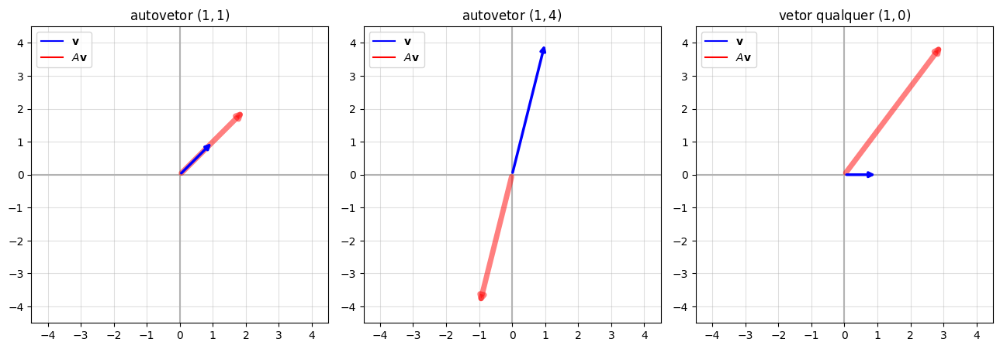
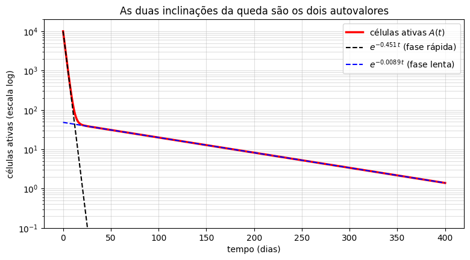

Autovalores e Autovetores#
Uma matriz \(A\) (\(n\times n\)) transforma vetores em vetores: \(\mathbf{x}\mapsto A\mathbf{x}\). Em geral, \(A\mathbf{x}\) aponta numa direção diferente de \(\mathbf{x}\). Mas, para algumas direções especiais, \(A\) apenas estica, encolhe ou inverte o vetor, sem girá-lo:
Um vetor \(\mathbf{v}\neq\mathbf{0}\) com essa propriedade é um autovetor de \(A\), e o número \(\lambda\) é o autovalor correspondente. Veja com \(A=\begin{pmatrix} 3 & -1\\ 4 & -2\end{pmatrix}\):
import numpy as np
import matplotlib.pyplot as plt
import sympy as sp
A = np.array([[3, -1], [4, -2]])
vetores = [(np.array([1, 1]), 'autovetor $(1,1)$'),
(np.array([1, 4]), 'autovetor $(1,4)$'),
(np.array([1, 0]), 'vetor qualquer $(1,0)$')]
fig, axs = plt.subplots(1, 3, figsize=(13, 4.5))
for ax, (v, titulo) in zip(axs, vetores):
Av = A @ v
ax.annotate('', xy=Av, xytext=(0, 0), arrowprops=dict(arrowstyle='-|>', color='r', lw=5, alpha=0.5))
ax.annotate('', xy=v, xytext=(0, 0), arrowprops=dict(arrowstyle='-|>', color='b', lw=2.5))
ax.plot([], [], 'b', label='$\\mathbf{v}$'); ax.plot([], [], 'r', label='$A\\mathbf{v}$')
lim = max(4.5, np.abs(Av).max() + 0.5)
ax.set_xlim(-lim, lim); ax.set_ylim(-lim, lim); ax.set_aspect('equal')
ax.axhline(0, color='0.7'); ax.axvline(0, color='0.7'); ax.grid(True, alpha=0.4)
ax.set_title(titulo); ax.legend(loc='upper left')
plt.tight_layout()
plt.show()

\(A\begin{pmatrix} 1\\ 1\end{pmatrix} = \begin{pmatrix} 2\\ 2\end{pmatrix} = 2\begin{pmatrix} 1\\ 1\end{pmatrix}\): a direção é preservada e o vetor é esticado por \(2\). Autovalor \(\lambda=2\).
\(A\begin{pmatrix} 1\\ 4\end{pmatrix} = \begin{pmatrix} -1\\ -4\end{pmatrix} = -1\begin{pmatrix} 1\\ 4\end{pmatrix}\): a direção é preservada e o vetor é invertido. Autovalor \(\lambda=-1\).
\(A\begin{pmatrix} 1\\ 0\end{pmatrix} = \begin{pmatrix} 3\\ 4\end{pmatrix}\), que não é múltiplo de \((1,0)\): não é autovetor.
Repare também que qualquer múltiplo de um autovetor ainda é autovetor (com o mesmo autovalor): \((2,2)\), \((-5,-5)\), … todos estão na mesma direção. Por isso o que importa num autovetor é a direção, e escolhemos o representante mais simples.
Por que isso nos interessa? Porque, se \(A\mathbf{v}=\lambda\mathbf{v}\), então
Autovetores e autovalores dão soluções de \(\mathbf{x}'=A\mathbf{x}\) — foi o que verificamos, sem explicar, no final da aula de matrizes, com \(\mathbf{v}=(1,1)\) e \(\lambda=2\). Vamos explorar isso a fundo na próxima aula. Agora, a pergunta é: como encontrar autovalores e autovetores?
A equação característica#
A equação \(A\mathbf{v}=\lambda\mathbf{v}\) pode ser reescrita como \(A\mathbf{v}-\lambda I\mathbf{v}=\mathbf{0}\), ou seja,
É um sistema homogêneo. Queremos uma solução \(\mathbf{v}\neq\mathbf{0}\) e, como vimos na aula passada, isso só acontece quando a matriz é singular:
Essa é a equação característica de \(A\): uma equação polinomial de grau \(n\) em \(\lambda\), cujas raízes são os autovalores. O roteiro, então, é sempre:
Resolver \(\det(A-\lambda I)=0\) para achar os autovalores \(\lambda\).
Para cada \(\lambda\), resolver o sistema homogêneo (singular) \((A-\lambda I)\mathbf{v}=\mathbf{0}\) para achar os autovetores.
O caso \(2\times2\). Para \(A=\begin{pmatrix} a & b\\ c & d\end{pmatrix}\),
O coeficiente \(a+d\) é a soma da diagonal, chamada traço de \(A\), e \(ad-bc\) é o determinante. Então, para matrizes \(2\times2\),
Como consequência, a soma dos dois autovalores é o traço e o produto é o determinante — uma boa forma de conferir as contas.
Exemplo 1: autovalores reais e distintos#
Encontre os autovalores e autovetores de \(A=\begin{pmatrix} 3 & -1\\ 4 & -2\end{pmatrix}\).
Aqui \(\operatorname{tr}A=1\) e \(\det A=-6+4=-2\), então
(Conferindo: \(2+(-1)=1=\operatorname{tr}A\) e \(2\cdot(-1)=-2=\det A\).)
Autovetor de \(\lambda_1=2\): resolvemos \((A-2I)\mathbf{v}=\mathbf{0}\):
As duas linhas dizem a mesma coisa (\(v_1-v_2=0\)), como sempre acontece em um sistema singular. Então \(v_1=v_2\), e escolhendo \(v_2=1\): \(\mathbf{v}^{(1)}=\begin{pmatrix} 1\\ 1\end{pmatrix}\).
Autovetor de \(\lambda_2=-1\):
São exatamente as duas direções especiais da figura do início.
Exemplo 2: autovalores complexos#
Encontre os autovalores de \(A=\begin{pmatrix} 0 & 1\\ -4 & 0\end{pmatrix}\).
Essa é a matriz do oscilador \(x''+4x=0\) escrito como sistema (\(x'=v\), \(v'=-4x\)). Aqui \(\operatorname{tr}A=0\) e \(\det A=4\):
Autovalores complexos — e, não por acaso, as mesmas raízes da equação característica \(r^2+4=0\) da EDO de segunda ordem! Isso vale sempre: para o oscilador \(mx''+\gamma x'+kx=0\) escrito como sistema, a matriz \(\begin{pmatrix} 0 & 1\\ -k/m & -\gamma/m\end{pmatrix}\) tem traço \(-\gamma/m\) e determinante \(k/m\), e sua equação característica é
que é a equação característica \(mr^2+\gamma r+k=0\) dividida por \(m\). Os autovalores da matriz são as raízes que já conhecíamos. Os autovetores também são complexos (para \(\lambda=2i\), resolvendo \((A-2iI)\mathbf{v}=\mathbf{0}\), obtém-se \(\mathbf{v}=(1,2i)\)); vamos tratar esse caso com cuidado mais adiante.
Exemplo 3: um autovalor repetido#
Encontre os autovalores e autovetores de \(A=\begin{pmatrix} 1 & 1\\ 0 & 1\end{pmatrix}\).
\(\operatorname{tr}A=2\) e \(\det A=1\): \(\lambda^2-2\lambda+1=(\lambda-1)^2=0\), então \(\lambda=1\) é um autovalor duplo. Para os autovetores:
e \(v_1\) é livre: \(\mathbf{v}=\begin{pmatrix} 1\\ 0\end{pmatrix}\). Apesar de o autovalor ser duplo, só existe uma direção de autovetores. Isso vai causar uma dificuldade na hora de resolver \(\mathbf{x}'=A\mathbf{x}\) — parecida com a das raízes repetidas em equações de segunda ordem — que também vamos tratar mais adiante.
Exemplo 4: uma matriz \(3\times3\)#
Encontre os autovalores e autovetores de \(A=\begin{pmatrix} 0 & 1 & 1\\ 1 & 0 & 1\\ 1 & 1 & 0\end{pmatrix}\).
Expandindo o determinante pela primeira linha:
Para achar as raízes, usamos a dica das raízes racionais do capítulo de ordem superior: os candidatos são \(\pm1,\pm2\). Testando, \(\lambda=-1\) é raiz, e dividindo,
Autovetor de \(\lambda=2\): escalonando \((A-2I)\mathbf{v}=\mathbf{0}\),
Autovetores de \(\lambda=-1\): \(A+I\) tem as três linhas iguais a \((1,1,1)\), então o sistema se reduz a uma só equação, \(v_1+v_2+v_3=0\), com dois graus de liberdade (é o exemplo \(3\times3\) da aula passada!):
Aqui, diferente do Exemplo 3, o autovalor duplo tem duas direções independentes de autovetores. No total, temos três autovetores LI para uma matriz \(3\times3\) — a situação mais confortável possível.
Resumo e conferência no computador#
Uma matriz \(n\times n\) tem \(n\) autovalores (contando repetições), que podem ser reais ou complexos. Quando são todos distintos, os autovetores correspondentes são automaticamente LI. Quando há repetição, pode haver tantas direções de autovetores quanto a multiplicidade (Exemplo 4) ou menos (Exemplo 3).
No numpy, a função np.linalg.eig devolve os autovalores e uma matriz cujas colunas são autovetores. Atenção: ela normaliza os autovetores para terem comprimento \(1\), então eles aparecem como múltiplos dos que encontramos à mão. O sympy faz a conta exata:
A = np.array([[3, -1], [4, -2]])
autovalores, autovetores = np.linalg.eig(A)
print("autovalores:", autovalores)
print("autovetores (colunas, normalizados):\n", autovetores)
print("dividindo cada coluna pela primeira componente:\n", autovetores / autovetores[0])
print()
B = sp.Matrix([[0, 1, 1], [1, 0, 1], [1, 1, 0]])
for valor, multiplicidade, vetores in B.eigenvects():
print("autovalor", valor, "(multiplicidade", multiplicidade, ") -> autovetores:", [list(v) for v in vetores])
autovalores: [ 2. -1.]
autovetores (colunas, normalizados):
[[0.70710678 0.24253563]
[0.70710678 0.9701425 ]]
dividindo cada coluna pela primeira componente:
[[1. 1.]
[1. 4.]]
autovalor -1 (multiplicidade 2 ) -> autovetores: [[-1, 1, 0], [-1, 0, 1]]
autovalor 2 (multiplicidade 1 ) -> autovetores: [[1, 1, 1]]
Para o autovalor duplo \(\lambda=-1\), o sympy escolheu os autovetores \((-1,1,0)\) e \((-1,0,1)\), diferentes dos que encontramos à mão. Não há contradição: qualquer par de vetores LI no plano \(v_1+v_2+v_3=0\) serve, e os dois pares geram o mesmo plano.
De volta às células leucêmicas#
Lembra da queda bifásica das células leucêmicas sob tratamento, na aula de modelagem? A matriz do sistema com tratamento (\(k=0{,}5\)) era
Dois autovalores negativos, de tamanhos muito diferentes. Como cada autovetor dá uma solução da forma \(e^{\lambda t}\mathbf{v}\), a solução é uma combinação de \(e^{-0{,}451t}\) (que morre em poucos dias) e \(e^{-0{,}0089t}\) (que morre muito devagar). Em escala logarítmica, cada exponencial é uma reta de inclinação \(\lambda\): as duas fases da queda são os dois autovalores!
from scipy.integrate import solve_ivp
M = np.array([[-0.01, 0.05], [0.01, -0.45]])
lam = np.linalg.eigvals(M)
print("autovalores:", lam)
t = np.linspace(0, 400, 1000)
sol = solve_ivp(lambda t, x: M @ x, (0, 400), [1e3, 1e4], t_eval=t, rtol=1e-9, atol=1e-12)
A_t = sol.y[1]
plt.figure(figsize=(9, 4.5))
plt.semilogy(t, A_t, 'r', linewidth=2.5, label='células ativas $A(t)$')
plt.semilogy(t, 1e4*np.exp(lam.min()*t), 'k--', label=fr'$e^{{{lam.min():.3f}\,t}}$ (fase rápida)')
plt.semilogy(t, A_t[-1]*np.exp(lam.max()*(t - t[-1])), 'b--', label=fr'$e^{{{lam.max():.4f}\,t}}$ (fase lenta)')
plt.ylim(1e-1, 2e4)
plt.xlabel("tempo (dias)"); plt.ylabel("células ativas (escala log)")
plt.title("As duas inclinações da queda são os dois autovalores")
plt.legend(); plt.grid(True, which='both', alpha=0.4)
plt.show()
autovalores: [-0.00886656 -0.45113344]

O que vem a seguir#
Agora temos tudo o que precisamos para resolver \(\mathbf{x}'=A\mathbf{x}\): cada par autovalor–autovetor fornece uma solução \(e^{\lambda t}\mathbf{v}\), e a solução geral será uma combinação delas. Como para as equações de segunda ordem, vão aparecer três casos — autovalores reais distintos, complexos e repetidos — e cada um vai ter sua própria «cara» no plano de fase.